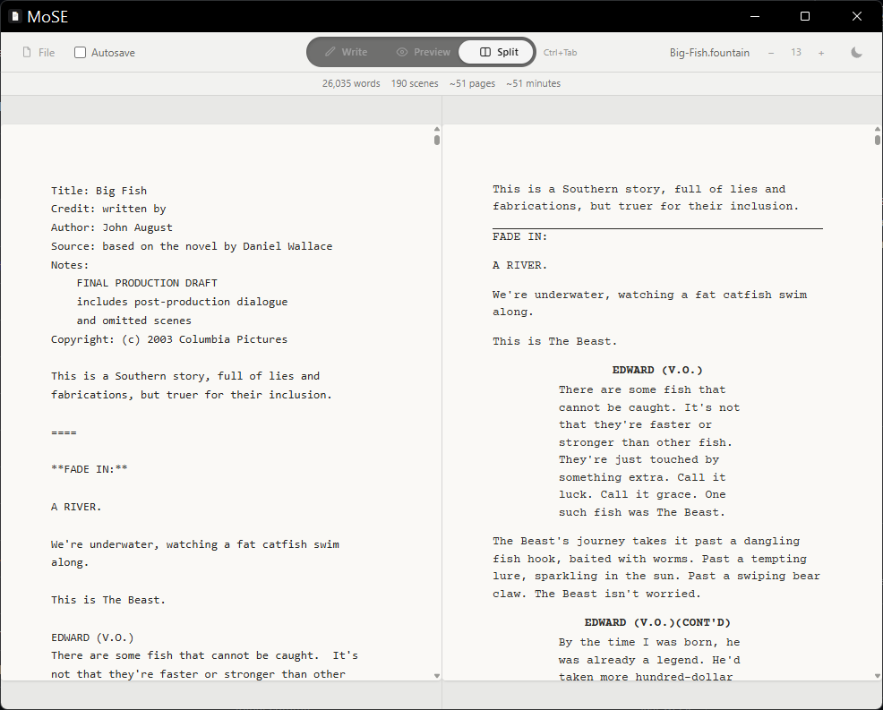

Features
Write, Preview, or Split
Plain-text Fountain markup on one side, a properly formatted screenplay preview on the other — or just write, distraction-free.
Export to PDF
Industry-standard margins, Courier Prime, and an automatically generated title page from your script's metadata.
Live Stats
Word count, scene count, estimated pages and runtime — updated as you write.
Autosave & Recovery
Opt-in autosave, plus automatic draft recovery if you close the app before saving.
Find in Editor
Quick in-document search with next/prev navigation and live match count.
Light & Dark Themes
Adjustable font size and theme, both remembered across sessions.
This project's short name, "MoSE," made me think of "titmouse" — so here's one. Photo credit: Skyler Ewing
🤖 An AI Dev Project
This application was built through an agentic, AI-assisted development workflow using Claude (Sonnet 5) by Anthropic. Read more in the project README.